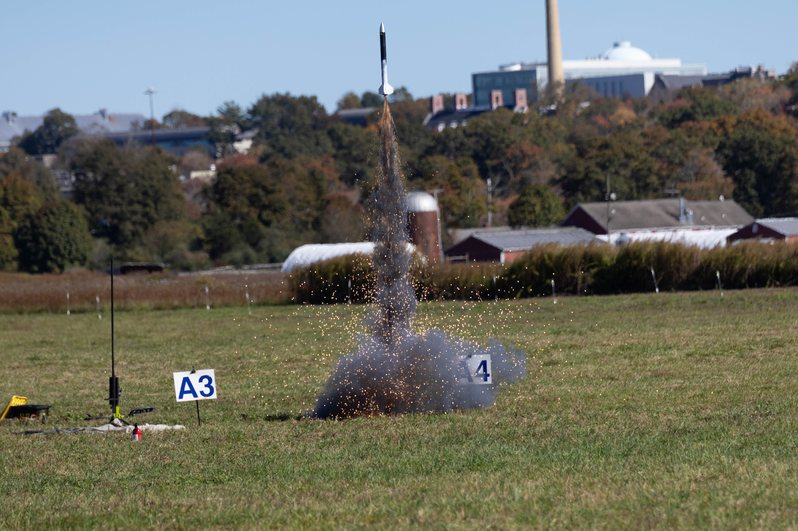
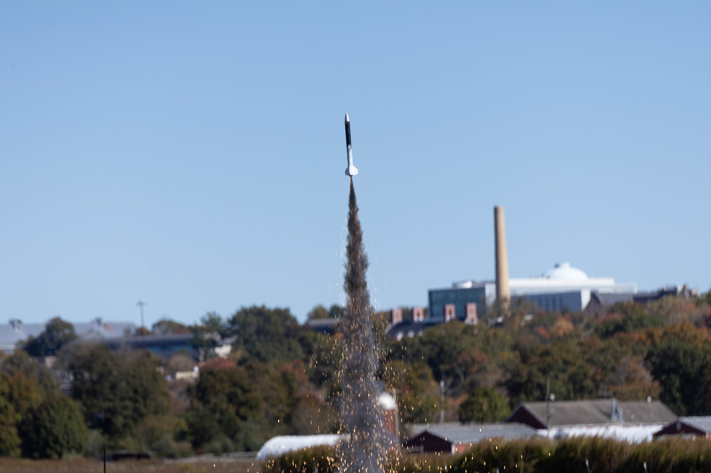
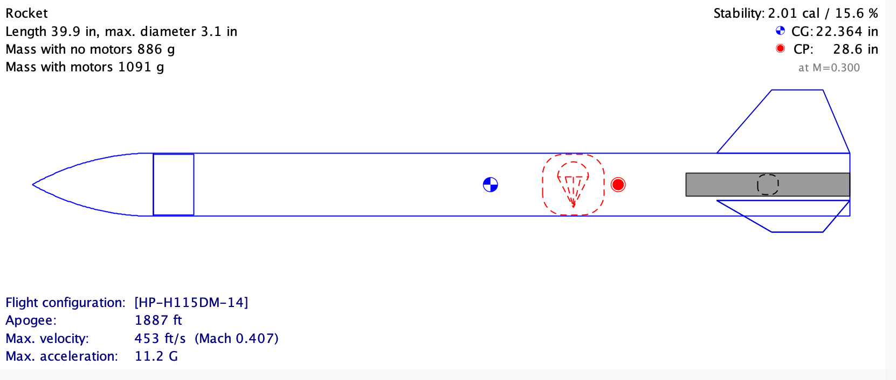
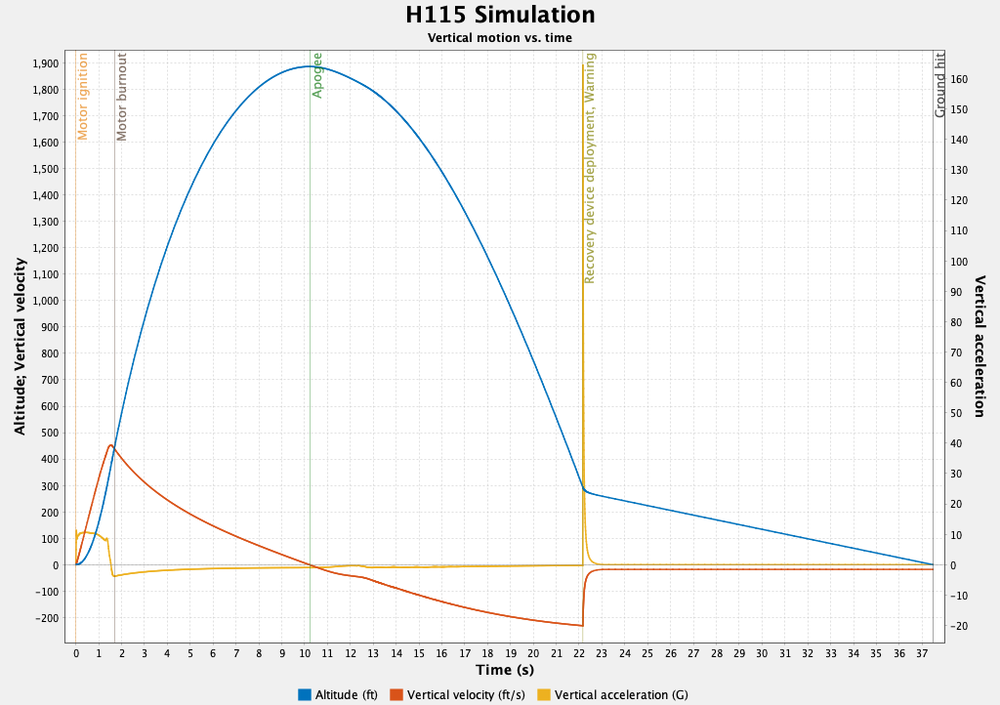
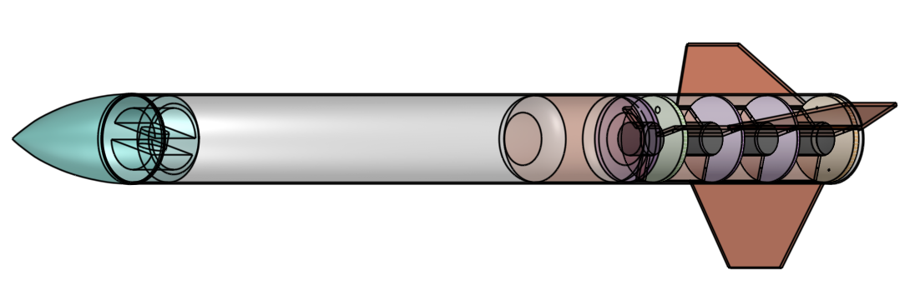
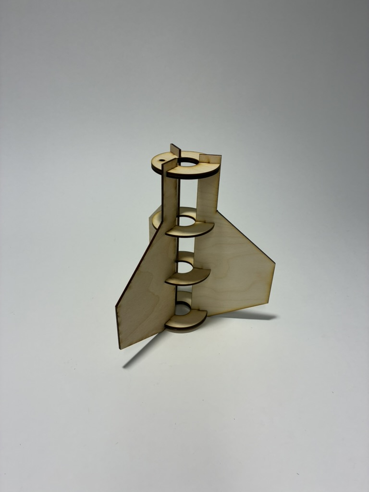
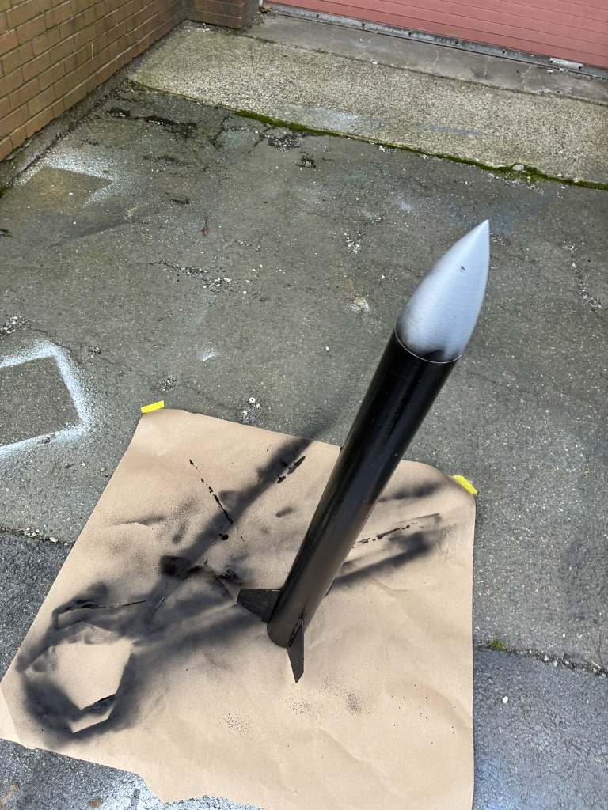
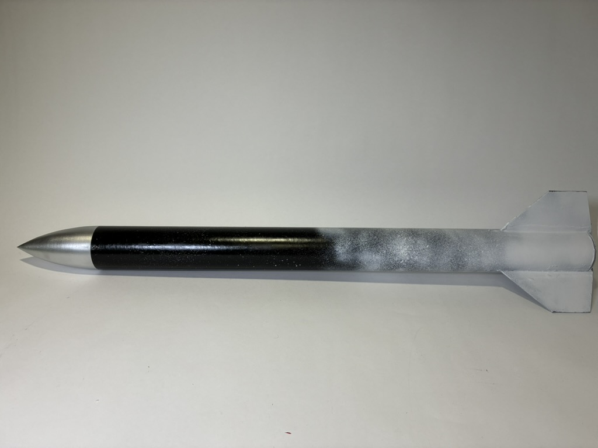

Engineering Project
L1 Rocketry Certification
I designed and built "Notyet", my Level 1 high-power rocket, and successfully completed its certification flight on October 18, 2026.

Overview
Level 1 certification qualifies rocketry hobbyists to fly high-power motors under the certifying organization’s procedures. My license was administered by the National Rocketry Association (NAR) →.
Since this was my first rocket launch, I designed my rocket with reliability in mind. I prioritzed reliability in the rocket's design. I selected an H115-14A motor → and designed for a stability margin of greater than 1.5 calibers →.
Despite being very reliable, my rocket still reached over 300 mph with an altitude of aproximately 2,000 ft. Parachute deployment was later than planned (due to under-drilling the ejection charge), but the rocket was recovered without damage.

Final assembly
Process
I started my design in OpenRocket, an open-source software for designing rockets, where I performed all simulations and determined the overall profile and motor configuration.


Once simulation and design work were completed, I moved on to the modeling of the rocket using CAD. I did this in Onshape. This step was important since it provided the geometry for the fins for laser cutting as well as the part file for the nose cone.

With the digital end completed, I moved onto fabrication, laser cutting, epoxying, drilling, painting, and assembling everything together.


